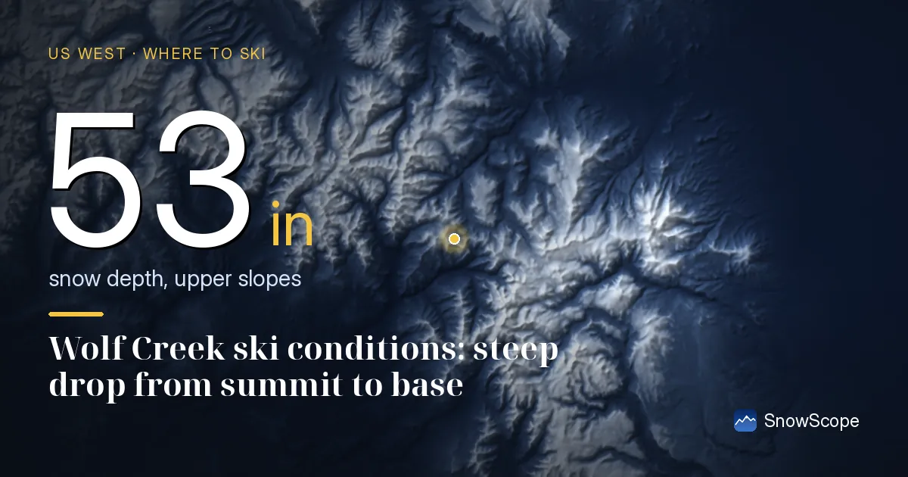
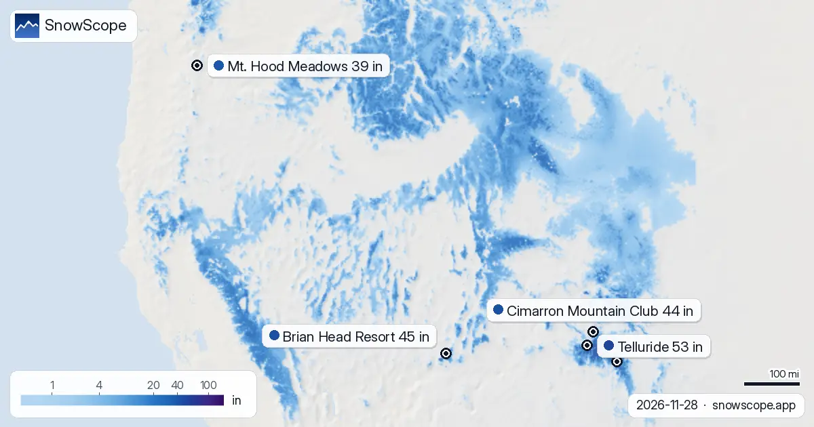

Wolf Creek ski conditions: steep drop from summit to base
Wolf Creek ski conditions – Wolf Creek's upper slopes hold 99 cm of snow, yet the base sits at just 1 cm. This extreme height gap shows how mountain water storage is locked at elevation right now across much of the region.
See the live snow forecast for Wolf Creek in the SnowScope appSnow depth, powder alerts and the 3D map, free.
Wolf Creek leads, but the story is elevation
Wolf Creek tops the region with 99 cm on its upper slopes today. The resort sits high: its base is at 3,128 m and the peak at 3,585 m. Yet that 1 cm at the base tells the real story. The freezing level—where snow turns to rain—sat between 1,520 m and 2,800 m yesterday. Wolf Creek's base is well above that range, so snow survives there. But in the valleys and lower mountains, rain fell instead.
Telluride, in second place with 135 cm on upper slopes, shows the same pattern even more sharply. Its summit sits at 3,812 m and holds 126 cm. The base at 2,662 m has only 4 cm. That 122 cm gap between top and base reflects how warm air pushes snow higher each day at this season.
| Resort | Snow depth | New snow, 72 h | Coming, next days | Top |
|---|---|---|---|---|
| Telluride | 53 in (135 cm) | 2 in (4 cm) | 0 in (1 cm) | 12,507 ft (3,812 m) |
| Brian Head Resort | 45 in (115 cm) | 0 in (0 cm) | 2 in (6 cm) | 10,909 ft (3,325 m) |
| Cimarron Mountain Club | 44 in (112 cm) | 1 in (3 cm) | 0 in (1 cm) | 11,355 ft (3,461 m) |
| Mt. Hood Meadows | 39 in (100 cm) | 25 in (63 cm) | 14 in (35 cm) | 7,303 ft (2,226 m) |
| Wolf Creek | 39 in (99 cm) | 0 in (1 cm) | 0 in (0 cm) | 11,762 ft (3,585 m) |

Water stored high, scarce low
Early season snow at high elevation means water locked in cold storage where it cannot feed rivers or reservoirs. The region's 183 resorts now have snow cover, but most of that snow sits above 3,000 m. Stations measured at mid-elevation tell the picture: Leavitt Lake at 2,926 m held 102 cm on 24 November, while lower stations like Mt Rose Ski Area at 2,685 m also measured 102 cm. But step down to Brian Head station at 3,060 m—just 71 cm. Snow amount does not rise smoothly with height; it depends on which air masses bring moisture and where the freezing level sits each day.
This uneven storage matters for water supply. Snow at 3,500 m melts later and feeds spring flows. Snow at 2,600 m melts sooner and runs off faster. Right now most water is locked high.
What brought snow yesterday, what comes next
Yesterday, 28 November, Wolf Creek gained 1 cm and Telluride added 4 cm. Neither resort received heavy snow. Cimarron Mountain Club, slightly lower at a top of 3,461 m, added 3 cm. Mt. Hood Meadows in Oregon, the wettest spot, added 14 cm in 24 hours and received 63 cm in 72 hours. The Pacific storm that fed Mt. Hood is now moving east.
Ahead of 1 December, the region forecast shows mixed signals. Brian Head Resort may see 6 cm arrive on 1 December. Wolf Creek and Telluride are forecast 0-1 cm in the next three days. By 1 December, total snow-covered ground in the region is expected to shrink from 794,350 square km today to 640,070 square km. Thaw will outpace fresh snow.
Height is destiny right now
Telluride's upper slopes lie 10 cm above its usual depth for this date and sit deeper than depths in 27 of the past 46 winters at this point in November. But at mid-height (3,237 m), SnowScope shows 43 cm today versus 46 cm normal. The gap widens toward the base. This tells us that snow arrival has been uneven by height and that early-season melt is active at lower elevations.
Brian Head, sitting lower overall (top 3,325 m, base 2,929 m), shows 115 cm on upper slopes. That is well above the usual 25 cm for late November—a strong start. Yet the same height rule applies: rock and thin snow likely show through below 3,100 m.
What this means for skiers and water managers
If you plan to ski, head high. Snow is reliable above 3,200 m across most resorts. Below 3,000 m, cover is thin to spotty. If you manage water resources, note that most November snow will not reach reservoirs until spring. The mountains are still cold enough to store it. Watch the freezing level each day; when it climbs above 3,000 m, melt from upper slopes will accelerate.
Tips for skiers
- Ski above 3,200 m where SnowScope shows reliable snow depth. Lower runs rely on fresh snow or grooming.
- Plan multi-day trips around the forecast: Brian Head may improve 1 December; Telluride and Wolf Creek stay dry through that date.
- If going off-piste, check the official avalanche bulletin. Thin early-season snow can hide rocks and uneven ground.
- Watch freezing levels. Yesterday's range (1,520–2,800 m) means rain fell in valleys. Next week's levels will reset daily.
- Use SnowScope's height breakdown to pick your run. Upper slopes hold 2–3 times more snow than base elevations right now.
About these numbers
Resort snow depths are the deepest snow on the resort's upper slopes on the date shown; they are estimates for an area, not a measurement at one point. Forecasts can change. Always read the official avalanche bulletin before going off-piste.
Official avalanche bulletins: avalanche.org
Cite this report
For research, teaching or the press: the numbers and charts are free to reuse under CC BY 4.0 with this citation.
SnowScope (2026), Wolf Creek ski conditions: steep drop from summit to base, https://snowscope.app/blog/en/2026/11/us-west-wolf-creek-snow-depth-today-28-november-2026.html, accessed 2026-11-28
SnowScope (Atlas Labs). (2026, November 28). Wolf Creek ski conditions: steep drop from summit to base. SnowScope snow reports. https://snowscope.app/blog/en/2026/11/us-west-wolf-creek-snow-depth-today-28-november-2026.html
BibTeX
@misc{snowscope2026uswestwolfcreeksnowdepth,
author = {{SnowScope (Atlas Labs)}},
title = {Wolf Creek ski conditions: steep drop from summit to base},
year = {2026},
month = nov,
howpublished = {\url{https://snowscope.app/blog/en/2026/11/us-west-wolf-creek-snow-depth-today-28-november-2026.html}},
note = {Published 2026-11-28 14:07 UTC; accessed 2026-11-28}
}· CC BY 4.0 · Methods, data and tools →
Wolf Creek: snow and temperature by height, this winter vs last (tools) →
Follow Wolf Creek
Free: a message when fresh snow is coming, and the forecast every morning.
More snow reports

Telluride's mid-slopes show 9 in (24 cm), running 92 percent of the seasonal average for mid-November. Saturday's system adds 5 in (13 cm) mostly above 10,000 ft.

Where should you go skiing in the US West? Three inputs, one shortlist: today's snow depth, the new snow of the last 72 hours and the forecast point …

Getting to Telluride in winter, airport by airport: Telluride Regional, Montrose, the drive on Highway 145 with the Colorado traction law, and the free gondola to Mountain Village.